ChainFaces Arena ChainFaces Arena 是备受期待的原始链上生成 ASCII 文本面孔的继任者。 智能合约生成器生成随机面孔，一旦计时器用完或铸造了最大数量的面孔，就会显示这些面孔。 竞技场是
Chains NFT 欢迎来到世界上第一个生成的高级珠宝下降。 Chains NFT 是一系列 10,000 个完全可生产的独特高级珠宝资产。 该系列中的作品包括迄今为止 CryptoJeweler 生态系统中价值最高的一些物
Champions Ascension - Pets of Massina 马西纳宠物是居住在冠军提升宇宙中的独特同伴的集合。 这些生物喜欢与冠军联手，帮助他们进行冒险，提高他们的战斗力，解开秘密和心碎。帝国画廊每只宠
Champs Only TRUE OWNER COUNT = 1327（超过 800 个通行证） Champs Only 是 1444 个 NFTS 的集合，可让您访问领先的 ALPHA 社区，其中包含一组有价值的 NFT 相关工具、功能和专家提供的 Alpha，旨
Char0 这个数字集合的意义远不止它们的数值。 这些数字意味着冒险。 每个 Char0 NFT 都为字符提供了第一个构建块。 Char0 NFT - 常见问题（FAQ） ▶ 什么是 Char0？ Char0 是
Characters (for Adventurers) 这是 Characters 的 OpenSea 目录是随机生成并存储在链上的。 它们是作为 Loot 生态系统的一部分而创建的。 Characters 的目标是通过额外的可能性和交互来扩展 Loot 生态系统。角色团队与其
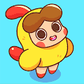 Cheeks by PEPO Paradise PEPO 的 Cheeks 是 3,888 个可爱的独特 PFP 的集合。 Cheeks 是我们在 PEPO 天堂孵化的第一个 NFT 品牌，将成为第一个成为 PEPO 之一并启动 PEPO 生态系统的集合。PEPO 天堂是一个围绕你已
Cheers UP Period Cheers UP 是 bilibili 委托的一系列 NFT。Cheers UP Periods 用于兑换 Cheers UP 角色。 1 次欢呼期 = 1 次随机欢呼。 heers UP是由bilibili委托的一系列NFT。这是一
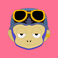 Chibi Apes 围绕以太坊区块链随机生成的 3000 个 3D 角色。 每只猿都是由 119 种可能的特征创造出来的，其中至少有 4 种特征不同，确保每只猿都是高度独特的！ Chibi Labs是售
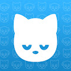 Chibi Frens 陪伴不仅仅适用于现实世界。 尽管他们的举止很酷，但 Chibis 也会感到孤独，这就是我们决定引入 Chibi Frens 的原因。 它们是您 Chibi 的伙伴，也是 Chibiverse 的必要指南。 将您的 Chibi 与
Chic Cow&Bullzz Collection Chic Cow&Bullzz 是 3,333 个创世 NFT 的集合，具有广泛的实用程序列表。收集 NFT、繁殖、喂养、战斗并获得 MILK 代币奖励。每头 Cow&Bull 都是一个独特的 NFT，具有 100 多个随机生成
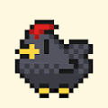 Chicken DAO Game ChickenDAO 是一款独特的区块链社区游戏。 每天买一只鸡并收集$EGGS。 鸡道游戏NFT - 常见问题（FAQ） ▶ 什么是鸡肉DAO游戏？ Chicken DAO Game是一个NF
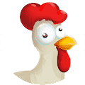 Chicken Derby 加入最有趣、最令人兴奋的基于以太坊的游戏，您可以在其中拥有和比赛您的鸡以赚取 ETH。 由 Ganja Farmer 的制造商带来。 现在在 Chickenderby.com 上玩 在6个不同的距离和7个不
Chill Bear Club Genesis Chill Bear Club 是 5555 个生成熊主题 NFT 的集合，使持有者能够在多个不同的元宇宙中“放松”。 该系列以原创的内部艺术品为特色，提供社区、实用性和长寿。 创世 Chill Bears 的
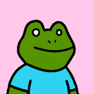 Chill Frogs NFT Chill Frogs 是 6,000 个可生成青蛙 NFT 中最冷的集合 - 现在他们爱上了我们在的新公主系列 - 看看他们！ 薄荷你的冰冻公主现在是奇尔青蛙的完美合作伙伴。立即将您的钱包
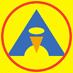 Chilly Bit Sale Chilly Bits 是 1000 个算法生成的 3D 艺术 NFT 的集合——以太坊区块链上的独特数字收藏品。 每个 Chilly Bit 都是从 200 多种可能的不同属性中随机生成的。 每一个寒冷的地方都是独
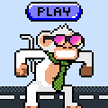 Chimper Run Chimpers Run 是一款基于传奇 Chrome Dino 的街机风格游戏。 玩家引导一只像素化的猴子 Chimp-Chimp 穿过横向滚动的景观，避开几个危险的障碍物以获得更高的分数。 收集 - 交易 - 在 OPENSEA 上
ChinaChic NFT China-Chic NFT 由社区打造，为社区服务。 它是 2,600 个独特的中国时尚头像的集合。 China-Chic NFT 为您提供 Jerome Loo 社区的会员访问权限。 持有者可以获得独家掉落、体验等。 ChinaChic NFT 的总销
Chiptos X 来自为您带来 Chiptopunks 的团队，Chiptos X 是由计算机部件制成的下一代高质量 3D 渲染机器人集合。 Chiptos X的总销量为858.48美元。一个Chiptos X
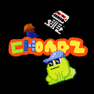 Choadz The Chunks 赋予了矮胖的两栖池塘居民。 使用 CC0 域向 CrypToadz 致敬。 什么是乔兹？ Choadz是一个NFT（不可替代令牌）集合。存储在区块链上的数字艺术品的集合。
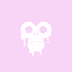 Chonkz Genesis Chonkz 是 1400 个 CCO 角色的集合，在以太坊区块链上漫游虚拟世界。 Chonkz Genesis的总销量为159.84美元。一个Chonkz Genesis NFT的平均价格为40美元
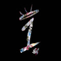 Chosen Ones by Seek One Seek One 的 Chosen Ones 收藏了 1,517 件创作艺术作品，这些作品基于当代传奇街头艺术家 Seek One 的手绘作品。 他的创世纪 NFT 系列融合了抽象和涂鸦风格的艺术，将 Seek One 的创作在以
Chris Brown Mintpang 全球首个去中心化音乐版权投资 NFT 项目🌠Chris Brown 和 Mintpang 启动了第一个去中心化音乐版权投资 NFT 项目。该项目为 Chris Brown 的新歌发行了 10,000 个基于 Klaytn 的 NFT，NF
Christmas Tree Collection Polygon 圣诞树系列包括 1000 棵独特的装饰圣诞树：在仅用 1 MATIC 铸造您自己的圣诞树并在 自定义您的圣诞树普通树：有 两种装饰品——普通装饰品和顶部装饰品 圣诞树：两
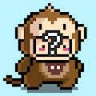 Chubbies Chubbies 是以太坊区块链上生成的最可爱的 NFT！ 他们可以是胖乎乎的，但他们也是可爱的 AF！ 一共10000。 每个 Chubby 都是以编程方式生成的 32x32 GIF 放大到 320
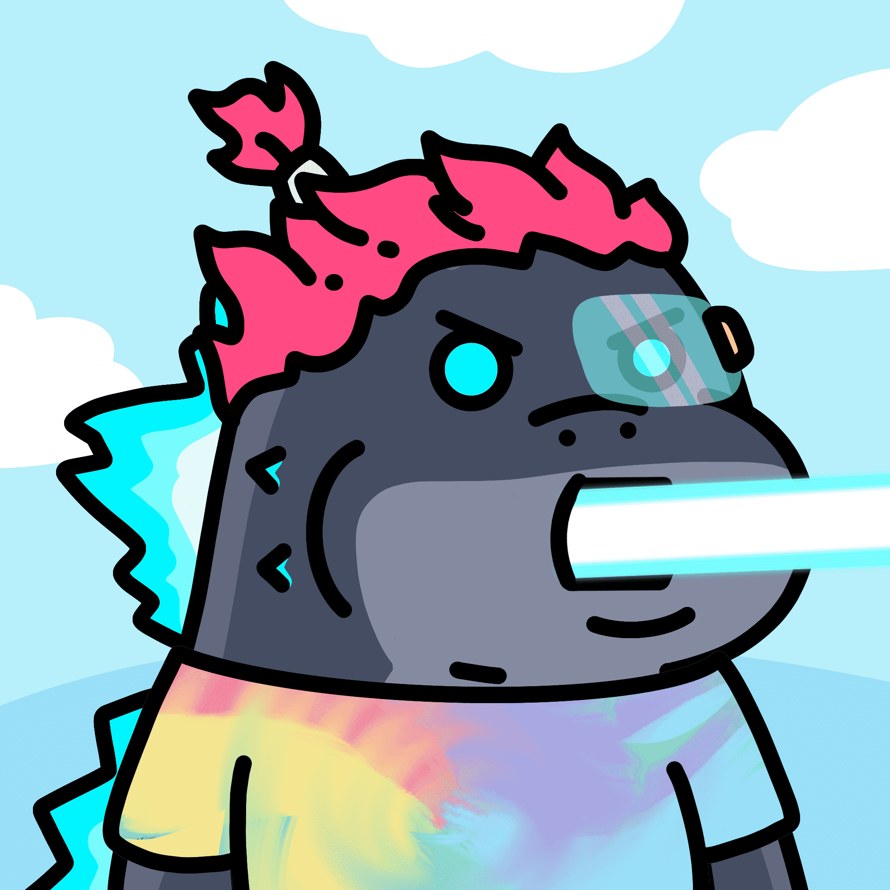 Chubby Little Jiras 官方批准的@PGodjira 衍生系列旨在通过 8888 Chubby Little Jiras 扩展 Godjira 的生态系统。 Chubby Little Jiras的核心使命是开发，构建和集成已经建立的良好基础Godji
ChubbyKaijuDAO 胖乎乎的 Kaiju 最近过得很艰难。 事情会改变。 敬请期待！胖乎乎的 Kaiju 既可爱又独特！ 他们不仅仅是胖乎乎的可爱怪物。 不止是眼前一亮。 购买 ChubbyKaiju NFT 即可加入 Chu
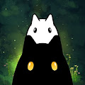 Chumbi Valley Official Chumbi Valley 是一款基于 BSC 和 Polygon 的迷人 RPG Play-to-Earn 游戏。 Chumbi Valley 以 NFT 生物和受口袋妖怪和吉卜力工作室为灵感的原创艺术为特色。 种子春比已经孵化了！4，096 个限量版非专
ChummyFinClub Chummy Fin Club 是一个面向新一代投资者的社区，集合中有 2,500 个独特的 Chummy Fin Club NFT。 访问私人活动、优质市场数据、每月演讲嘉宾和启动资金。 项目售罄！ Chummy Fin Club 是一
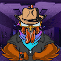 Chunky Chickens 1 区块链。 3,333 只鸡。 准备好赢得大奖了吗？房子拿走了他们。 现在他们正在占领房子。这些鸡块被赌场领主以不同的方式冤枉。 现在他们要找回属于他们的东西
Circleorzo 4444 个以编程方式生成的 NFT 的集合。 每张图片都是独一无二的； 使用 p5.js 随机生成。 在 circleorzo.com 上铸造 0.044 ETH Circleorzo是对有限空间内增长机制的评论。每个图
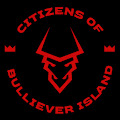 Citizens of Bulliever Island Bullieverse是一个开放的元宇宙，我们的社区可以在这里赚钱，创造体验并享受乐趣。拥有公牛的10，000名公民以ERC-721 NFT的
CITY BLOCKS by COOPER RAY c CITY BLOCKS 是我作为自行车快递员的累积经验的结果，在曼哈顿下城长大，以及 14 年多以来对通过两个轮子了解我所在城市的每一寸的贪得无厌的痴迷。 这些照片跨
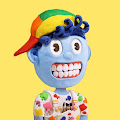 Clay Friends 世界著名的定格动画师 Trent Shy 很高兴推出 Clay Friends，这是一个由 100% 真正粘土制成的 5000 件生成系列。 Clay Friends 将精心手工制作的艺术作品与独一无二的社区体验
Clock 8008 Clock8008 是您可以在元节中拥有的 8008 个功能时钟的集合。 Clock8008 以一丝不苟的细节精心打造，重新定义了虚拟世界中的计时，同时成为永恒的主打产品。 时钟 8008 NFT - 常见问
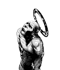 Clones Never Die Asset 2SSUL 的 CxNxD 漫画 一开始独自存在的神，直接将自己的身体劈开，重生为101个外表和身份各异的克隆人。 然而，与建设一个多元思想共存的国家的初衷相反， 10
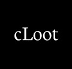 cLoot (for Chinese Adventurers) cLoot 是中文描述的随机生成并存储在链上的冒险家装备。 统计数据、图像和其他功能被刻意省略以供其他人解释。 您可以以任何您想要的方式使用 cLoot。 什
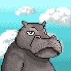 Club Hippo Club Hippo 是一个 NFT 项目，它将允许持有者在他们自己的 Web3 Metaverse 中参与和互动，其中将包括第一个功能齐全的 P2E Arcade。 他们的实用代币 $HIPPO 将成为他们项目的核心
CNK World by Cookies N Kicks 出生在梅尔罗斯的街头。 由高级时装和炒作文化抚养长大。 由 Cookies N' Kicks 赋予生命。 使命？ 为创意人员创造协作环境。 下一步是什么？ 等一下。 CNK 家族已进入元界。
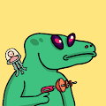 CoCoVerse Official CoCoVerse 官方 NFT 在过去 7 天内售出 2 次。CoCoVerse Official 的总销售额为 0 美元。一份 CoCoVerse 官方 NFT 的平均价格为 0 美元。共有 595 名 CoCoVerse 官方所有者，总共拥有 2,222 个代币
Coffee Club Official 你能闻到咖啡的味道吗？ 咖啡俱乐部是一个社区驱动的 NFT 集合，包含独特的马克杯头像。每个 Cup 都是独一无二的，并且作为 ERC-721 令牌存在于以太坊区块链上。 我们
Coindraw - Week 34, 2022 (Classic) 加密货币游戏进化！ Coindraw 是一组以社区和慈善为重点的可持续全球游戏活动。 我们每周一和周三提供每周游戏活动，奖品以加密货币支付！ 要了解有关我们的愿景